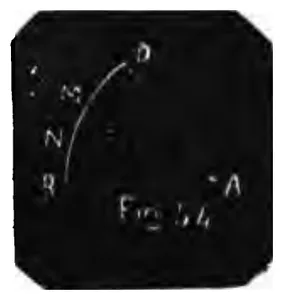

Book VIII: Angles & Trigonometric Lines¶
Libro Ottavo: Della costruzione, moltiplicazione e divisione degli angoli e delle linee trigonometriche (§§ 113–123)
Angular transfer, multiplication, bisection, and trigonometric line constructions by compass alone (§§ 113–123, pp. 63–68, folios 0088–0093): copying and scaling angles given only by three vertices (§§ 113–117) and constructing sine, cosine, tangent, and secant—plus recovering the arc from each trigonometric line (§§ 118–123).

§§ 118–123: Angle Bisection & Trigonometric Lines
118. Problem. To bisect the angle \(BAC\) (fig. 54) given only by the three points \(B, A, C\) in which \(A\) is unequally distant from \(B\) and from \(C\).